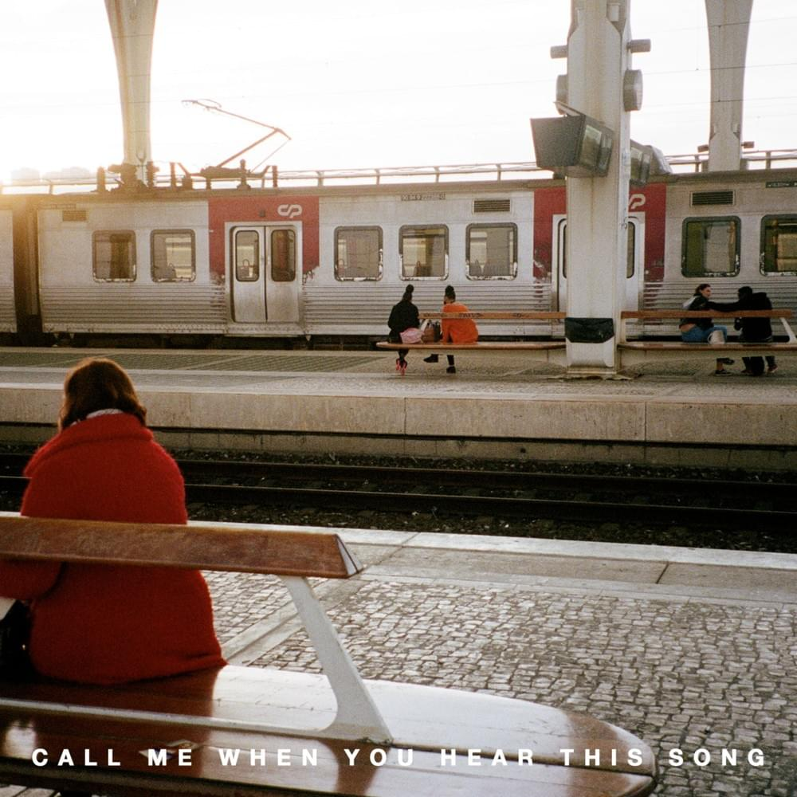
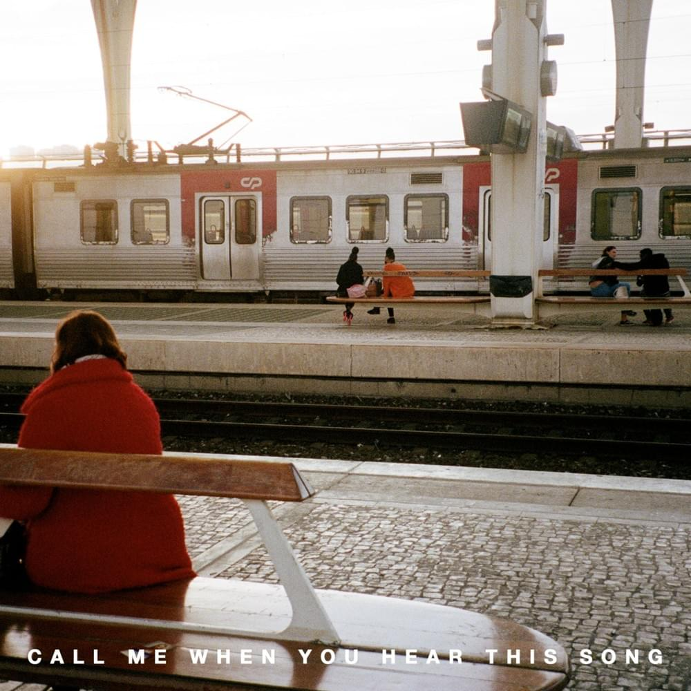

There I was again tonight forcing laughter, faking smiles
Same old tired, lonely place
Walls of insincerity
Shifting eyes and vacancy vanished when I saw your face
All I can say is it was enchanting to meet you
Your eyes whispered "have we met?"
Across the room your silhouette starts to make it's way to me
The playful conversation starts
Counter all your quick remarks, like passing notes in secrecy
And it was enchanting to meet you
All I can say is I was enchanted to meet you
This night is sparkling, don't you let it go
I'm wonder struck, blushing all the way home
I'll spend forever wondering if you knew
I was enchanted to meet you
The lingering question kept me up
Two a.m., who do you love?
I wonder till I'm wide awake
Now I'm pacing back and forth, wishing you were at my door
I'd open up and you would say, hey
It was enchanting to meet you
All I know is I was, enchanted to meet you
This night is sparkling, don't you let it go
I'm wonder struck, blushing all the way home
I'll spend forever wondering if you knew
This night is flawless, don't you let it go
I'm wonder struck, dancing around all alone
I'll spend forever wondering if you knew
I was enchanted to meet you
This is me praying that this was the very first page
Not where the story line ends
My thoughts will echo your name, until I see you again
These are the words I held back, as I was leaving too soon
I was enchanted to meet you
Please don't be in love with someone else
Please don't have somebody waiting on you
Please don't be in love with someone else
Please don't have somebody waiting on you
This night is sparkling, don't you let it go
I'm wonder struck, blushing all the way home
I'll spend forever wondering if you knew
This night is flawless, don't you let it go
I'm wonder struck, dancing around all alone
I'll spend forever wondering if you knew
I was enchanted to meet you
Please don't be in love with someone else
Please don't have somebody waiting on you


 
